Six directions in the brand violet palette. Each is a single scalable SVG (favicon → billboard).
Refined version of today's mark — a geometric “T” in a rounded gradient tile. Safest, most legible at 16px.

Literal pun on the name — a tack pinning work to the board. Friendly and memorable; the most “ownable”.
The sailing sense of “tack” — a zigzag course toward a goal. Echoes the current lightning mark; reads as progress.
Board columns + header bar form a hidden “T”. On-the-nose for a PM tool; ties straight to the product UI.
A location/task pin holding a checkmark — “tracked & done”. Versatile across domains (construction, personal, software).
Three tacks wired as a DAG — nods to the cycle-checked dependency engine. Most “technical / power-user” feel.